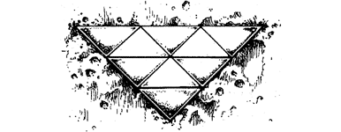

11
Descending the narrow staircase, you arrive at a tunnel-like corridor, sandwiched between two walls of mouldering masonry. Foul, oily water gurgles along a channel in the slippery floor towards a distant archway, which is blocked by a black iron portcullis. Bolted to the criss-crossed bars is a plaque which bears a curious design: 2
{kind=link}

On the wall to your left is a large, rusty dial with a brass pointer. Set around it, like the numerals of a clock, are the numbers 1 to 40, and below the dial is a lever. Your basic Kai instincts tell you that by selecting the correct number, or numbers, and pulling the lever, you will open the portcullis.
If you have the Magnakai Discipline of Pathsmanship, turn to 306.
If you have the Magnakai Discipline of Divination, turn to 167.
If you have neither of these skills, turn to 329.
Footnotes
[2] For those who cannot use the illustration of the plaque or those who don’t have access to it, we offer the following description.
The plaque can be formed in the following way. A regular hexagon (i.e. a six-sided shape with all sides of equal length and all angles equal) is divided into six equal triangles by three lines which extend from each corner to its opposite (i.e. one line for each of three pairs of opposite corners). A larger triangle is formed from the hexagon by placing three triangles (of the same size and shape as the triangles in the hexagon) next to three alternating sides of the hexagon (i.e. if the sides of the hexagon are numbered 1–6, then the sides of the triangles should be attached to sides 2, 4, and 6).
Alternately, the plaque could be formed from equilateral triangles (i.e. triangles with three equal sides) in the following way. A single triangle is placed on the plaque with one of its corners pointing down. Three new triangles are attached to the sides of the first triangle. The result so far should resemble a large triangle with one corner pointing up. Two more small triangles (pointing down) are attached to the bottom of this large triangle. Finally, three new triangles (pointing up) are attached to the latest two so that, all together, the plaque forms one large triangle.
The final, triangular plaque has five interlocking rows of small triangles. Starting from the top, it has a row of one triangle pointing up, a row of one triangle pointing down, a row of two triangles pointing up, a row of two triangles pointing down, and a row of three triangles pointing up.